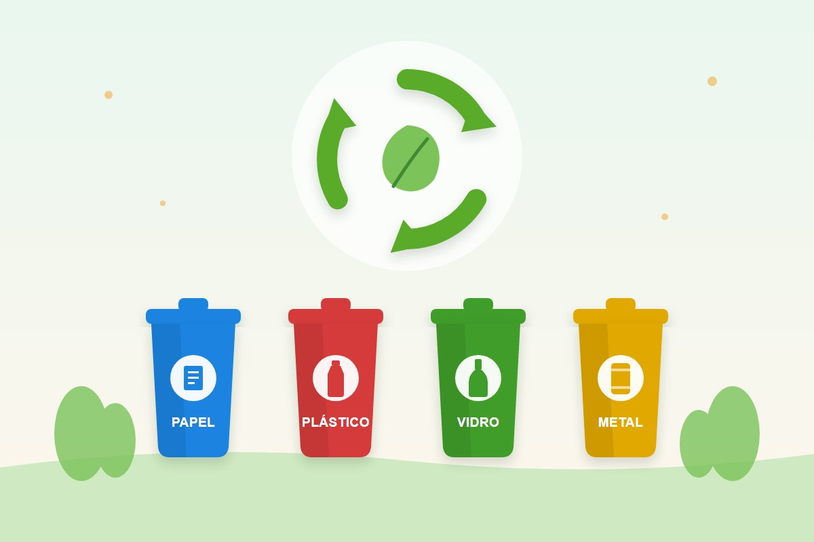

Cidadania
Natal solidário: 10 formas de ajudar de verdade
Por Equipe Instituto AMA · Publicado em
O fim de ano mexe com a gente. Entre compras, festas e encontros, muita gente sente vontade de fazer algo por quem vai passar o Natal com a mesa vazia, sozinho ou longe de casa. A boa notícia é que existem muitas formas de ajudar, e várias delas não custam nada.
Nesta matéria reunimos 10 formas de fazer um Natal solidário, dicas para doar com responsabilidade e um lembrete importante: a necessidade não termina em 25 de dezembro.
Por que o fim de ano pede mais solidariedade?
Dezembro costuma ser um mês difícil para muitas famílias. As crianças estão de férias e deixam de receber a merenda escolar, muitos trabalhos temporários terminam e os gastos aumentam. Ao mesmo tempo, idosos que vivem em instituições e pessoas em situação de rua sentem ainda mais a solidão nas datas de festa.
Por outro lado, é também a época em que as pessoas estão mais abertas a ajudar. Aproveitar essa disposição, e transformá-la em um hábito para o ano todo, é o grande presente que podemos dar.
10 formas de fazer um Natal solidário
- Adote uma cartinha ou uma sacolinha: muitas entidades, igrejas, centros espíritas e os Correios organizam campanhas em que você recebe o pedido de uma criança, de um idoso ou de uma família e entrega o presente até uma data combinada. Respeite o prazo: quem espera conta com aquele presente.
- Doe alimentos: arroz, feijão, óleo, macarrão, leite e enlatados ajudam a montar cestas básicas e a ceia de quem não teria uma. Veja na página de campanhas quais itens estão faltando agora.
- Doe roupas, calçados e brinquedos em bom estado: separe o que você não usa mais, lave, confira se está inteiro e entregue em um ponto de coleta. Doar não é descartar: entregue o que você daria a alguém da sua família.
- Doe sua nota fiscal: em São Paulo e em vários outros estados, os créditos da sua nota podem ir para uma entidade social, sem custo nenhum para você. Veja como doar sua Nota Fiscal Paulista ou como doar em outros estados.
- Doe seu tempo: as entidades precisam de mãos para separar doações, montar cestas, embrulhar presentes e organizar festas. Se você nunca fez isso, leia nosso guia Voluntariado: como começar.
- Doe sangue: nas férias e nos feriados de fim de ano, o número de doadores costuma cair, enquanto a necessidade continua. Uma única doação pode ajudar mais de uma pessoa. Procure o hemocentro mais próximo antes de viajar.
- Destine parte do seu Imposto de Renda: quem faz a declaração completa pode doar aos Fundos dos Direitos da Criança e do Adolescente e aos Fundos do Idoso e deduzir o valor do imposto devido, dentro dos limites da lei. Para valer na declaração do ano seguinte, a doação deve ser feita até 31 de dezembro. Confirme as regras com seu contador ou no site da Receita Federal.
- Visite quem está sozinho: asilos, abrigos e hospitais costumam receber grupos de visita no fim de ano. Combine antes com a instituição: cada uma tem horários e regras próprias.
- Olhe para perto: às vezes quem precisa de ajuda é o vizinho idoso, a família que perdeu o emprego, o porteiro que vai trabalhar na noite de Natal. Um prato de comida, um convite para a ceia ou uma visita fazem diferença.
- Ofereça presença e escuta: para muitas pessoas, o fim de ano traz saudade, luto e tristeza. Ligar para alguém, ouvir sem pressa e estar junto pode ser a ajuda mais valiosa. Se alguém disser que pensa em desistir da vida, leve a sério: o CVV atende pelo telefone 188, 24 horas, de graça. Saiba mais em Suicídio: compreender para prevenir.
Como doar com responsabilidade
- Escolha uma entidade séria: prefira instituições com CNPJ, endereço conhecido e que mostrem o que fazem com as doações.
- Pergunte o que está faltando: a doação certa é a que a entidade precisa. Às vezes falta arroz e sobra roupa, ou o contrário.
- Confira a validade dos alimentos: doe apenas produtos dentro do prazo, fechados e em embalagem original.
- Pense na idade de quem vai receber: brinquedos com peças pequenas não são adequados para crianças pequenas.
- Respeite a dignidade de quem recebe: não fotografe nem publique o rosto de quem recebeu ajuda sem autorização. A caridade verdadeira é discreta.
- Cuidado com golpes: no fim de ano aparecem perfis falsos pedindo Pix em nome de entidades e campanhas. Confirme a chave Pix no site oficial da instituição antes de transferir. Veja dicas no site Não Caia no Golpe.
Todas as vezes que fizestes isso a um destes meus irmãos mais pequeninos, a mim o fizestes.
O verdadeiro espírito do Natal
Para os cristãos, o Natal celebra o nascimento de Jesus, que nasceu pobre, em uma manjedoura, e dedicou a vida aos que sofriam. Em todas as tradições religiosas, a caridade aparece como um dos caminhos mais diretos para o bem. Como lembramos na matéria Todas as religiões levam ao bem, a Doutrina Espírita resume isso em uma frase: “Fora da caridade não há salvação”.
Caridade não é só dar coisas. É também tolerância, perdão, paciência e atenção. Um Natal solidário começa em casa, com a família, e se estende a quem está do lado de fora. Se quiser começar esse hábito com os seus, veja como fazer o Evangelho no Lar.
E depois do Natal?
Em janeiro, as doações caem e as necessidades continuam. As entidades que recebem muito em dezembro passam aperto nos primeiros meses do ano. Algumas ideias para manter a solidariedade viva:
- Cadastre a doação automática da sua nota fiscal: você faz uma vez e ajuda o ano inteiro.
- Escolha uma entidade e combine uma doação mensal, mesmo que pequena.
- Reserve algumas horas por mês para o voluntariado.
Perguntas frequentes
Como ajudar no Natal sem gastar dinheiro?
Você pode doar seu tempo como voluntário, doar sangue, doar sua nota fiscal para uma entidade, doar roupas e brinquedos que não usa mais ou simplesmente visitar e ouvir quem está sozinho.
O que doar para uma cesta básica de Natal?
Os itens mais pedidos são arroz, feijão, óleo, açúcar, café, macarrão, molho de tomate, farinha, leite e enlatados. Antes de comprar, pergunte à entidade o que está faltando.
Como saber se uma entidade é confiável?
Verifique se ela tem CNPJ, endereço e canais oficiais, se mostra o trabalho que realiza e se presta contas das doações. Desconfie de pedidos de Pix feitos por perfis desconhecidos.
Posso deduzir doações do Imposto de Renda?
Sim, quem faz a declaração completa pode deduzir doações aos Fundos dos Direitos da Criança e do Adolescente e aos Fundos do Idoso, dentro dos limites da lei. Para valer na próxima declaração, a doação deve ser feita até 31 de dezembro.
Doações só no fim de ano?
Não. Em janeiro e fevereiro as doações costumam cair, mas as famílias continuam precisando. Uma doação mensal ou a doação automática da nota fiscal ajudam o ano inteiro.
Fontes e leitura recomendada
- Lei nº 9.608/1998 – Lei do Voluntariado
- Estatuto da Criança e do Adolescente (Lei nº 8.069/1990), arts. 260 e 260-A
- Doações aos Fundos dos Direitos da Criança e do Adolescente podem ser deduzidas do Imposto de Renda – CNMP
- Doação de sangue – Ministério da Saúde
- Nota Fiscal Paulista – Secretaria da Fazenda de SP
- CVV – Centro de Valorização da Vida
Leia também
Dia da Consciência Negra: história, Zumbi dos Palmares e por que é feriado
Por que o 20 de novembro, quem foi Zumbi dos Palmares, como a data virou feriado nacional e o que cada um pode fazer contra o racismo.
Ler matériaVoluntariado: o que é, benefícios e como começar
Doar tempo também é caridade: tipos de voluntariado, benefícios para quem ajuda e um passo a passo para começar ainda hoje.
Ler matéria
Reciclagem e descarte correto do lixo: guia prático
Como separar o lixo em casa, o que pode ser reciclado, as cores da coleta seletiva e onde descartar pilhas, óleo e eletrônicos.
Ler matériaGostou desta matéria? Veja outras no blog, conheça nossas referências ou fale com a gente.